Lesson 1
Choosing Yarn | Holding Hook | Yarn Tension | Crochet Terms | Slip Knot | Chain Stitch
How to choose Yarn and Hook
Choosing the right crochet hook is an important step, as it affects the density of the stitch, the neatness, and the overall appearance of the finished item.
Hook sizes usually correspond to their thickness in millimetres. For example, a size 3 hook has a 3mm head. However, this is not always a strict rule. For thin cotton threads, a size 1 hook or smaller (0.5 - 0.9) is suitable. Items made from cotton or linen look better with tight knitting.
For wool or acrylic yarn, the hook size is often indicated on the packaging. This is usually size 3 or larger if the thread is thick. Wool or acrylic items look better with loose knitting. It's recommended to crochet a small sample before starting, using different hooks, to choose the optimal option.

Each type of yarn has a different thickness or "weight," with fingering being the finest. The term "ply," frequently seen on labels, refers to the number of strands that were twisted together to form the yarn. Yarn content or "fibres content" tells what the yarn is made of: synthetic or natural fibres or combinations of the two.
Synthetic yarns, such as acrylics, are easier to wash and can be worn by people sensitive to wool. Yarns have labels that provide all the information that you will need to know, such as the type of yarn it is, the amount and/or yardage in the ball or skein, gauge, fiber content and care instructions. Many labels also include free patterns, which are printed on the inside.
Top of the pageHow to hold the hook and the yarn🖐️
There are two main, widely used ways to hold a crochet hook: "Knife" grip and "Pencil" grip.
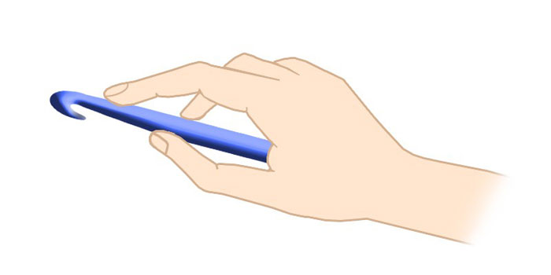
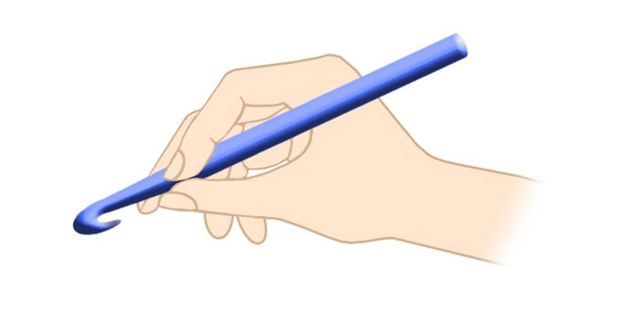
"Knife" grip: In this method, the hook is held from above, similar to how you hold a knife. The thumb is placed on the upper part of the hook's handle, and the other fingers support it from below.
"Pencil" grip: In this case, the hook is held between the thumb and index finger, like a pencil. The tip of the hook is pointing towards you, and the thumb and index finger hold the hook.
It's important to understand that there is no single correct or incorrect way to hold a crochet hook. The optimal method is the one that is most comfortable for you personally. It is recommended to try both methods and choose the one that provides maximum comfort and control during the crocheting process. For right-handed individuals, it is generally more comfortable to hold the hook in their right hand and control the working yarn with their left hand.

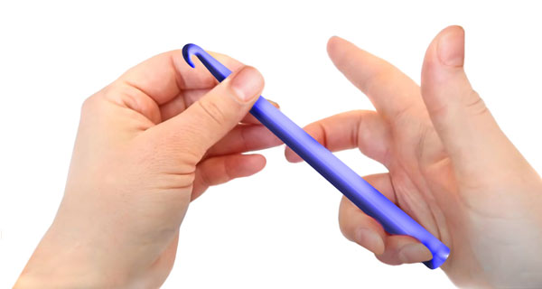
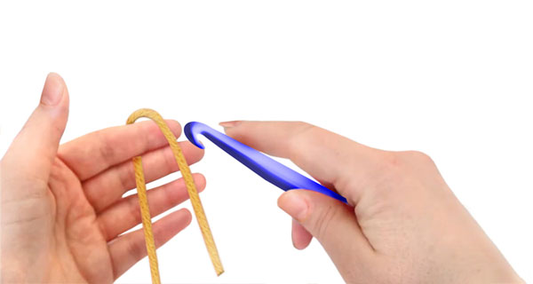
Holding the yarn correctly in your non-dominant hand (usually the left hand for right-handed crocheters) is crucial for regulating tension, which in turn affects the consistency and appearance of your stitches.
The goal is to create a smooth flow of yarn from the ball to your hook, with just enough resistance to keep your stitches even. There are a few variations, but this method is widely used. Here's a common and effective way to hold the yarn:
How to Hold Yarn in Your Left Hand for Tension Control:


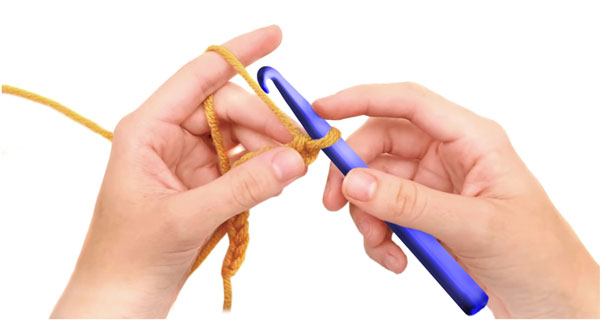
Wrap the Yarn Around Your Pinky Finger: Start by taking the working yarn (the strand coming from the ball) and wrapping it around your pinky finger on your left hand. You can wrap it once or twice, depending on how much tension you need. Wrapping it more times will create more resistance.
- Bring the Yarn Across Your Palm: After wrapping around your pinky, bring the yarn across the inside of your left hand, towards your index finger.
- Guide the Yarn Over Your Index Finger: Drape the yarn over your index finger. Your index finger will act as a guide and a primary point of tension control.
- Hold the Crochet Work with Your Thumb and Middle Finger: Your thumb and middle finger (and sometimes your ring finger) will be used to hold and manipulate the crochet work itself, just below the hook.
Some people prefer to wrap the yarn around their index finger as well, similar to the pinky, for even more tension.
How This Method Regulates Tension:
- Pinky Finger: The wrap(s) around your pinky finger provide the initial drag on the yarn. This prevents the yarn from flowing too freely and creating loose stitches.
- Across the Palm: Bringing the yarn across your palm helps to keep the yarn organized and prevents it from tangling.
- Index Finger: Your index finger is the main control point. By slightly straightening or bending your index finger, you can increase or decrease the tension on the yarn as it feeds to the hook. A straighter finger allows the yarn to flow more easily (less tension), while a bent finger creates more resistance (more tension).
Holding the Work: Your other fingers holding the work provide stability and allow you to position the fabric correctly for each stitch.
Tips for Effective Yarn Holding and Tension Control:
Experiment: There's no single "right" way to hold the yarn for everyone. Experiment with wrapping the yarn around your pinky once or twice, or wrapping it around your index finger, to find what works best for you and gives you the most consistent tension.
Practice: Like any crochet skill, tension control takes practice. Pay attention to how the yarn feels as it flows through your hand and adjust your grip as needed to maintain even stitches.
Relax: Try not to hold the yarn or your hook too tightly. A relaxed grip will give you more control and prevent your hand from getting tired.
Observe: If you have a crochet instructor or a friend who crochets, observe how they hold their yarn. You might pick up some useful tips.
Yarn Type: The type of yarn you are using can also affect tension. Thicker or "stickier" yarns might require less tension from your hand, while thinner or "slippier" yarns might require more.
By mastering how to hold the yarn in your non-dominant hand, you'll gain better control over your tension, leading to more uniform stitches and a more professional-looking finished project.
Top of the pageBasic Crochet Terms
Before you start crocheting, let's get familiar with the basic terms that will help you better understand the process:
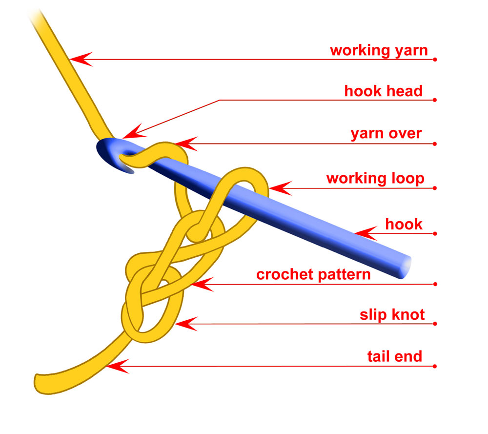
- Crochet Hook:
Crochet Hook is a slender tool with a hooked end, used to pull yarn through loops to create crochet stitches. Crochet hooks come in various sizes and materials (such as metal, plastic, or wood), and the size of the hook affects the size and appearance of the stitches. The hook's tip is designed to catch and draw the yarn through loops, making it the main tool for crocheting.
- Working yarn:
This is the yarn running directly from the ball to your crocheted swatch or item. Correct tension of the working yarn is crucial for evenness and density of your crochet. The working yarn is usually held on the index finger and controlled by the other fingers to regulate tension. The degree of working yarn tension is directly proportional to the desired crochet density.
- Hook head:
It is the very tip of the crochet hook, the part of the hook at the end that has a shape allowing it to catch and pull the yarn through the existing loops when crocheting. The shape and size of this "head" or "tip" can vary slightly among different hooks and manufacturers, which affects how easily the yarn is caught and passes through the loops. The shape and size of the head affect the ease of working and the appearance of the crochet.
- Yarn over:
This is a basic element for forming many types of stitches. A yarn over is created when you bring the working yarn over the hook without immediately working a stitch. This element is needed for forming many types of stitches.
- Working loop:
This is the loop currently on the hook during the crocheting process. The index finger is often used for additional control over the working loop.
- Crochet Pattern
or crochet work is sometimes referred to simply as 'work' or 'item.'
- Slip Knot:
The very first loop from which the crochet work begins.
- Tail end:
This is the segment of yarn remaining after forming the first loop or the initial stage of crocheting. As a rule, it is not used in the main crocheting process. However, if left long enough, the tail end can be useful for sewing crocheted parts together. When performing the "magic ring" technique, pulling the tail end allows you to adjust the size of the ring.
How to make the first loop (Slip Knot) and crochet a Chain Stitch

Slip Knot
A slip knot is a fundamental knot used to begin most crochet projects. It creates the initial loop on your hook, from which you will then crochet your first stitch (usually a chain stitch). The key characteristic of a slip knot is that it can be easily tightened or loosened, and it "slips" along the yarn when pulled, hence the name.
The slip knot is essential because it securely attaches the yarn to your hook and provides the starting point for your chain or first row of stitches. Pictures below help to understand how to make a Slip Knot - the very first loop and crochet a chain. Here's a common way to make a slip knot:
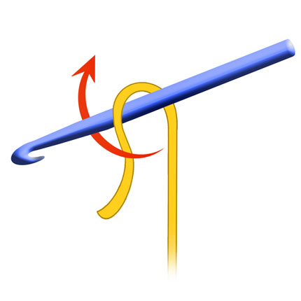
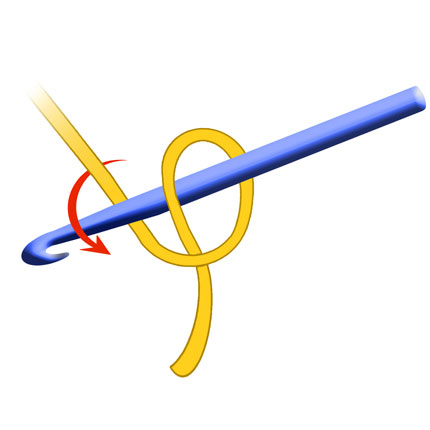
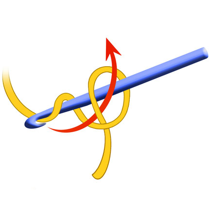
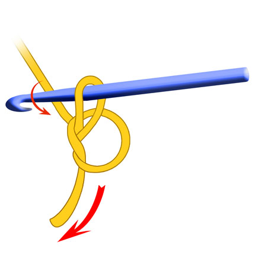
1. Take the end of your yarn and make a loop.
2. Bring the working yarn (the yarn coming from the ball) behind the loop.
3. Reach through the first loop with your crochet hook and grab the working yarn.
4. Pull the yarn through the loop and gently tighten the knot around the hook.
Chain Stitch (Air Loop) and a Chain
Let's try to make the first loop and crochet a chain. Take the thread and hook, as shown in the picture, and repeat the actions. You can also watch a video tutorial. You should get a chain. To prevent it from unraveling, cut the working thread and pull it through the last loop.
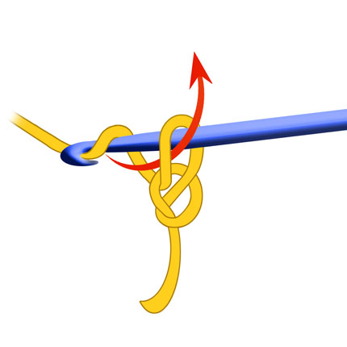
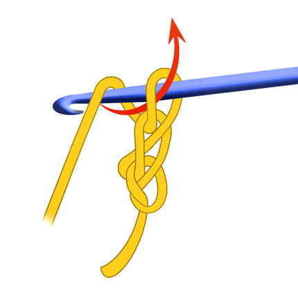
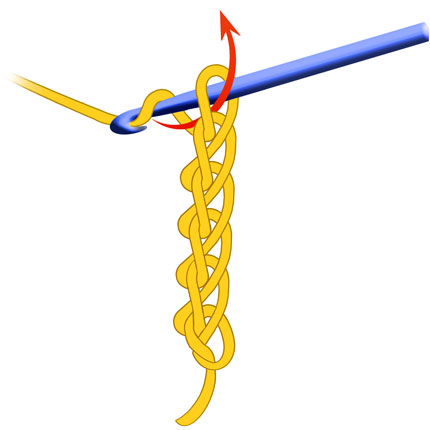
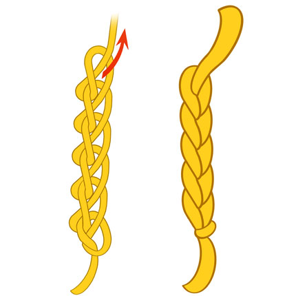
5. Make a slip knot on the hook. Yarn over the hook to pull it through the loop on the hook.
6. Pull the working yarn back through the first loop, creating a new loop on your hook.
7. Gently pull on the ends of the yarn to tighten the knot around your hook.
8. To finish work the working thread should be cut and pulled through the working loop. This will stop crochet to unravel.
You've made one air loop. Repeat these steps to crochet a chain of the desired length. Air loop sometimes used as a synonym for chain stitch, but more often refers to a single loop used to raise a row. Air loop for raising a row: At the end of a row, to move to the next one, make several air loops (the number depends on the height of the next stitch).
Depending on the yarn and density of crochet the chain could look very different. The first picture shows chain made of thin yarn with a big hook, the second chain is made of a fluffy yarn with smaller hook.
Top of the pageLesson 2
Symbols | Chain Stitch | Slip Stitch | Half Crochet | Single Crochet | Double Crochet | Half Double Crochet | Treble Crochet
Crochet charts, abbreviations and conventional signs (Symbols)
When crocheting, the same elements are often used. Each element has a name, for example, "chain stitch" or "single crochet". In addition to the name, the elements have a shortened designation (abbreviation) and a symbol. For example: "Chain stitch" is abbreviated as "CS". "Single crochet" is abbreviated as "SC".
What are symbols and why are they needed?
Symbols schematically depict an object or action. Look at this symbol: no matter what language you speak, you will recognize it in any country - this one 🚻 means "restroom". And this symbol 🚸 shows where you can safely cross the road - "Pedestrian crossing". And this one - 🚦 "Traffic light".
Crochet symbols, or symbols, are graphic signs used in crochet and knitting patterns to represent various stitches and elements. Imagine them as the alphabet of crochet. Each symbol corresponds to a specific action that needs to be performed with the hook (for example, crocheting a chain stitch, single crochet, double crochet, and so on). The beauty of these symbols is that they are universal. Regardless of the language in which the pattern description is written, if you have a pattern with symbols, you will be able to understand it and crochet the pattern.
Symbols are also used when describing crochet patterns and when depicting chart patterns and designs. They visually resemble the corresponding crochet elements.
Now we will get acquainted with a few of the most frequently used symbols and abbreviations. There are many more crochet techniques. Their names, the most common symbols, abbreviations, photos, and explanations will be provided in a table on a separate page. A video will also be included.
Top of the pageChain Stitch (СH)
CH 
We have learnt how to make a chain stitch or air loop in the previous lesson. Abbreviation for the Chain Stitch is
- CH (or Air Loop - AL).
The Chain Stitch is the beginning of everything—a thread’s first whisper, a path drawn in yarn. It’s made by looping the yarn over the hook and pulling through, again and again, forming a soft braid of interlinked loops. Each chain is a promise of what’s to come—a rhythm of readiness, a breath before the story begins.
In diagrams, the Chain Stitch is often shown as a small circle or oval or a horizontal loop—gentle, open, and continuous. It’s the stitch of beginnings, of bridges, of space between thoughts. In your fairy-tale school, it might be the stitch that says, “Let’s begin.
Top of the page Slip Stitch (SS)
SS 
Slip Stitch (abbreviation - SS) is the whisper of the crochet world—subtle, silent, and essential. It doesn’t build height, but it binds, seals, and connects. Used to join rounds, finish edges, or travel across fabric, it’s the stitch that says, “I’m here, but I won’t take up space.”
Its symbol is a small dot—like a pause in a sentence, or a blink in a lullaby. It’s the breath held before the next movement. In your fairy-tale school, it might be the stitch of secrets and endings, the quiet magic that holds everything together.
Top of the page Half Crochet (HC)
HC
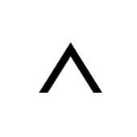
Half Crochet (abbreviation – HC) shares structural kinship with the Slip Stitch, yet it’s worked into the base of the previous row or fabric, as shown in the illustrations below. Unlike the Slip Stitch, which seals and joins, the Half Crochet travels—used decoratively along a row for edging, reinforcement, or colorwork. Its visual role shifts with intention.
In such cases, I mark it with a small angle symbol (∧)—a half-cross that echoes the Single Crochet’s ‘X’, but softened and reduced. This reflects its quiet strength and directional flow, honoring its resemblance to the Slip Stitch while recognizing its rhythmic movement across the fabric.
The logic is both visual and functional:
SS for closure and joining—static, central, complete.
HC for movement along the row—directional, rhythmic, embedded.
Thus, the same stitch may wear different symbols depending on its role—like a word that changes meaning in a sentence. My system embraces this nuance, allowing the language of yarn to speak with clarity and grace.

How to make a Half Crochet:
- Insert the hook into the desired loop on the fabric.
- Yarn over.
- Pull the yarn through the loop on the fabric and through the loop on the hook in one go.
- A slip stitch is used to forming a circle of chain stitches, join parts, finish a round when crocheting in a circle, or to move across stitches or between parts of a pattern without creating extra height, decorating the last row or as a part of a pattern scheme.
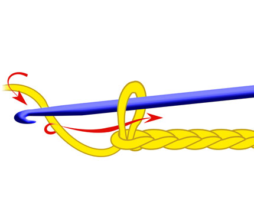
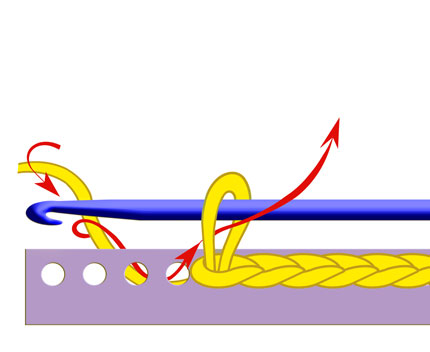
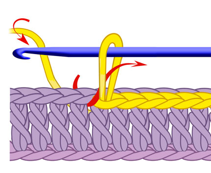
Making a Chain Stitch and a chain
Making Half Crochets on the fabric base
Making Half Crochets on the previous row
Single Crochet (SC)
SC 
Single Crochet (abbreviation – SC) is one of the foundational stitches in crochet, and it’s especially beloved in the creation of amigurumi toys. Compact, versatile, and rhythmic, the single crochet forms the backbone of many soft and sculptural designs. There are several variations of this stitch, which I’ll explore in later lessons.
The symbol for Single Crochet is a simple cross—like a softly drawn ‘X’. It stands for one firm, grounded stitch: small in size, but mighty in purpose. Just as an ‘X’ marks a meaningful place, this stitch holds the fabric together with quiet strength. You might even think of it as a tiny hug—an embrace in yarn that whispers, “I’m here to hold everything in place.
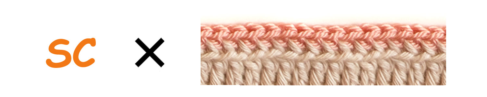
How to make a Single Crochet:
- Insert the hook into the desired loop on the fabric.
- Yarn over and pull it through the loop on the fabric. There are now two loops on the hook.
- Yarn over and pull it through both loops on the hook in one go.
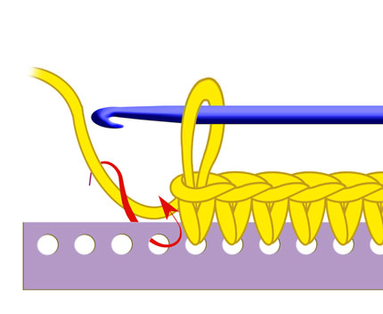
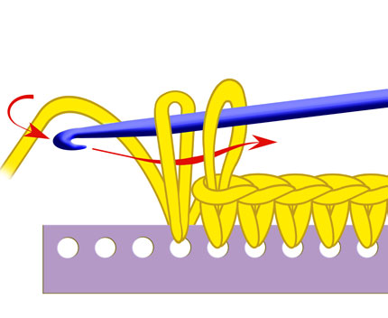
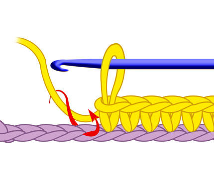
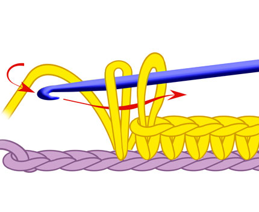
Double Crochet
DC 
Double Crochet (abbreviation – DC) is a taller, more open stitch—graceful and expansive. It creates soft, airy fabric with a gentle rhythm, often used to build texture, height, and flow. In amigurumi, it’s less common, but in garments and storytelling stitches, it brings breath and movement.
The symbol for Double Crochet is a vertical line with a single slash through it—like a tree with one branch, reaching upward. It stands for a stitch that stretches and lifts, offering space between loops. Where the Single Crochet hugs close, the Double Crochet opens wide, like arms reaching toward the sky. It’s a stitch of expansion, of possibility—a gentle leap in the language of yarn.
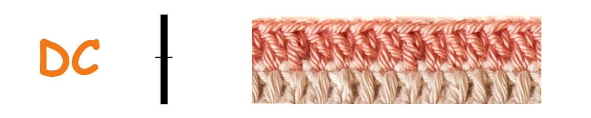
How to make a Double Crochet:
- Yarn over.
- Insert the hook into the desired loop on the fabric.
- Yarn over and pull it through the loop on the fabric. There are now three loops on the hook.
- Yarn over and pull it through the first two loops on the hook. There are two loops on the hook.
- Yarn over and pull it through the remaining two loops on the hook.
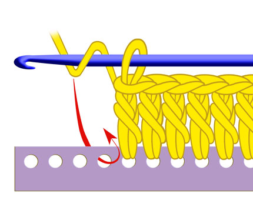
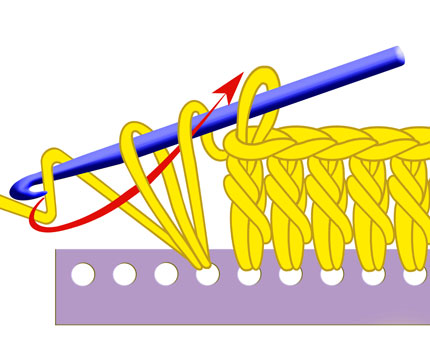
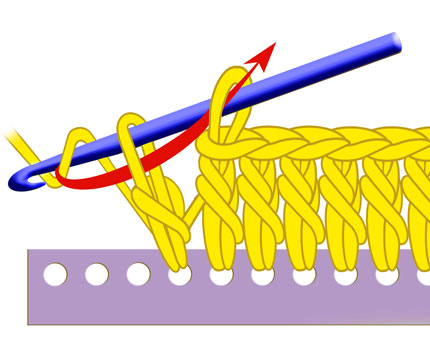
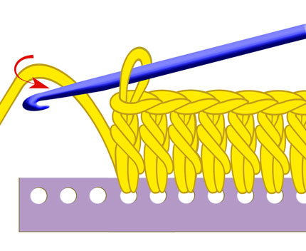
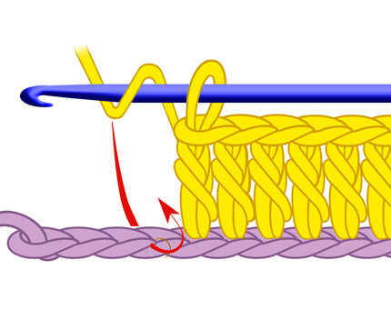
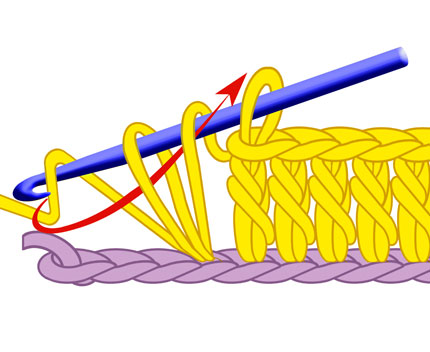
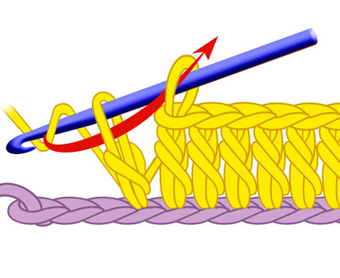
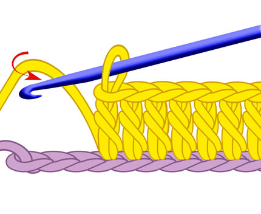
Half Double Crochet
HDC 
The Half Double Crochet (abbreviation - HDC) is a stitch of balance—neither too tall nor too tight. It offers a soft rise, like a breath between thoughts. Used often in textured fabrics and gentle transitions, it’s a stitch that bridges spaces with grace.
The symbol for Half Double Crochet is a vertical line with a single horizontal bar—like a stem with a leaf, reaching upward but staying grounded. It speaks of rhythm and direction, a stitch that moves forward while holding close. It’s the heartbeat of many patterns: steady, warm, and quietly expressive.
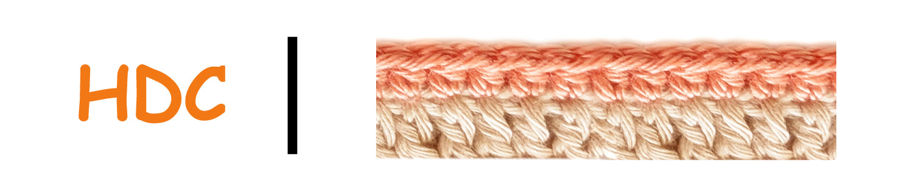
How to make a Half Double Crochet:
- Yarn over.
- Insert the hook into the desired loop on the fabric.
- Yarn over and pull it through all three loops on the hook in one go.
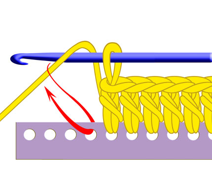
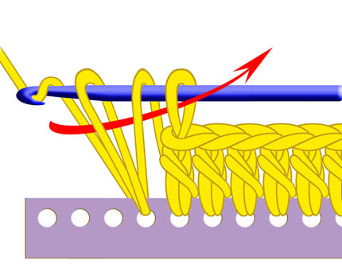
Treble Crochet (TC)
TC 
Treble Crochet (abbreviation - TC) is the tallest of the basic stitches—a graceful leap in the language of yarn. It stretches high above the fabric, creating open, airy textures that feel like breath and breeze. Used in lacework, drapery, and expressive designs, it’s a stitch of elevation and elegance.
The symbol for Treble Crochet is a vertical line with two slashes—like a tree with two branches, reaching skyward. It speaks of height and flow, a stitch that dances across space. Where Single Crochet holds close and Double Crochet lifts gently, Treble Crochet soars—an exhale, a flutter, a moment of flight.
It’s the stitch of openness, of dreaming big. In your fairy-tale school, it might be the one that says, “Let’s see how far yarn can fly
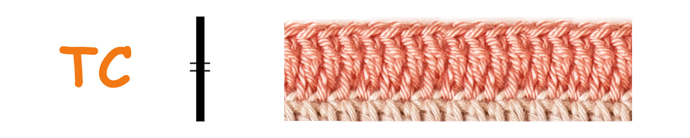
How to make a Treble Crochet:
- Make two yarn overs on the hook.
- Insert the hook into the desired loop on the fabric.
- Yarn over and pull it through the loop on the fabric. There are now four loops on the hook.
- Yarn over and pull through the first two loops (3 loops remain).
- Yarn over and pull through the next two loops (2 loops remain).
- Yarn over and pull through the remaining two loops.
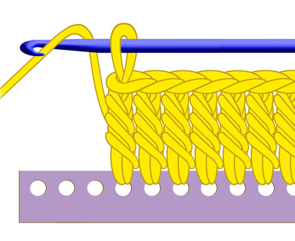
Lesson 3
N Ring | Rolled Ring | Magic Ring | Beginning Crochet | Pattern Chart
Ring of N chain stitches
NR
This is how to make a ring of N chain stitches (N*CH Ring) to start a crochet motif:
- Make a Slip Knot: Begin by making a slip knot on your hook, just as you would to start any crochet project.
- Chain Stitches: Crochet a specific number of chain stitches. The number of chains you make will determine the size of the central hole in your ring and will be indicated in your crochet pattern. For example, a pattern might tell you to "chain 4" (4R) or "chain 6" (6R).
- Form the Ring: To form the ring, you will join the last chain stitch you made to the very first chain stitch you made (the one closest to the slip knot). To do this, insert your hook into the center of that first chain stitch.
- Make a Slip Stitch: Yarn over and pull the yarn through both the chain stitch and the loop that was already on your hook in one movement. This is a slip stitch, and it connects the two ends of your chain, creating a closed ring.
Now you have a small ring of chain stitches. The number of chain stitches you made initially (before joining) will determine the circumference of this ring.
Working into the Chain Ring:
Once you have your chain ring, you will typically work your first round of stitches into this ring. You'll insert your hook into the centre of the ring (the hole created by the joined chain stitches) and crochet the required number of stitches (single crochets, double crochets, etc., as specified in your pattern).
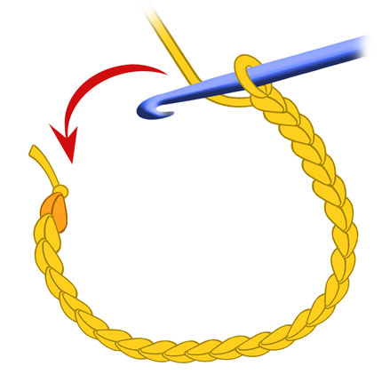
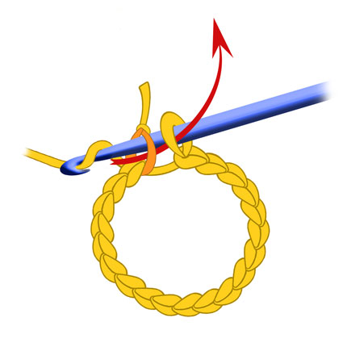
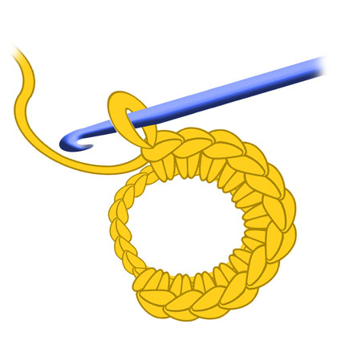
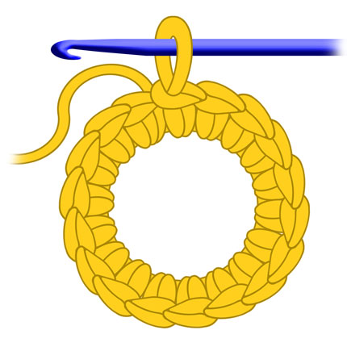
Foundation Ring: Rolled Thread or Plastic Base
FR 
When working in the round, the first stitches often nestle into a ring—a circle that holds the story’s center. Traditionally, this ring is made by joining a short chain with a slip stitch, forming a loop of yarn. But there are other ways to begin:
Rolled Thread Ring: A soft spiral of yarn, wrapped and held gently, into which the first stitches are worked. It’s organic, flexible, and full of warmth—like a nest made by hand.
Plastic Ring Base: A firm, ready-made circle that offers structure and clarity. It’s especially useful for decorative pieces, ornaments, or when you want a clean, defined center. The stitches wrap around it like vines on a trellis, turning something rigid into something tender.
Each ring—whether made of yarn or plastic—serves as the heart of the round. It’s the place where characters gather, where stories begin, where the first stitch takes root.
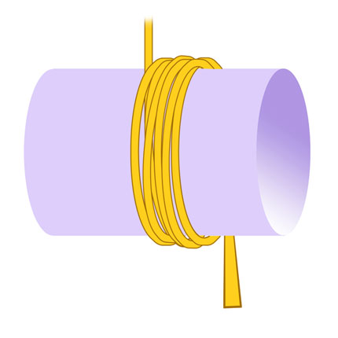
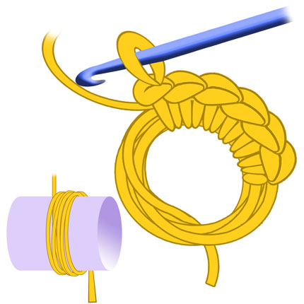
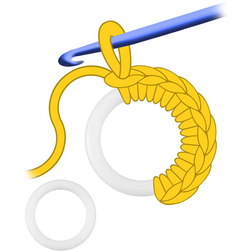
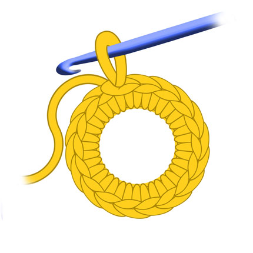
Magic Ring (Amigurumi Ring)
AR 
Magic Ring or Amigurumi Ring is used to start crocheting in a circle without a central hole, which is especially important for amigurumi toys.
Making an adjustable Magic Ring (sometimes called Amigurumi Ring)
- Take the end of the yarn and wrap it around your fingers to create a ring.
- Secure the ring (optional but recommended): Sometimes, especially for amigurumi, you'll crochet one or two chain stitches after making the first loop on your hook in the magic ring. This helps to secure the ring before you start the single crochets. The number of chains depends on the height of the stitches you'll be using in the first row (one chain for single crochet, two for half double or double crochet, etc.).
- Insert your hook into the magic ring: Put your hook under both parts of the yarn ring you formed around your fingers.
- Yarn over and pull through: Grab the working yarn with your hook and pull it back through the magic ring. You now have two loops on your hook (the original loop and the one you just pulled through).
- Complete the single crochet: Yarn over again and pull the yarn through both loops on your hook. You have just completed your first single crochet into the magic ring.
- Repeat: Continue inserting your hook into the magic ring, yarning over and pulling through, and then yarning over and pulling through both loops on your hook, until you have the required number of single crochets for your first row (this number will be specified in your pattern, e.g., "6 sc into magic ring").
- Tighten the ring: Once you have completed all the single crochets for the first row, gently pull the tail end of the yarn (the short end you used to form the ring) to close the central hole. This is the "magic" of the magic ring!
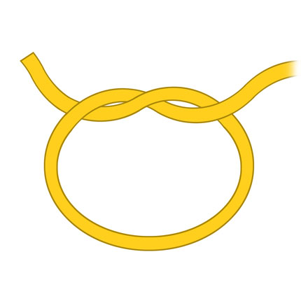
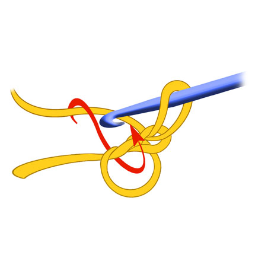
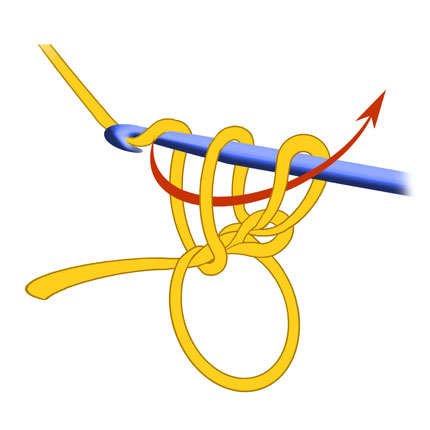
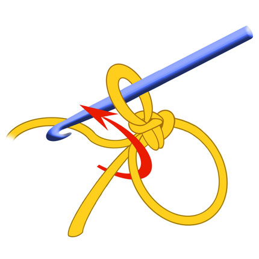
1. - Take the end of the thread and wrap it around your fingers to create a ring.
2. Insert the hook under both parts of the ring. Yarn over and pull it through, making the first loop.
3. Start making stitches into the loop.
4. The first single crochet made in the loop.
5. Crochet the required number of stitches (single сrochets or double crochets, etc) for the first row inside the ring .
6. Pull the free end of the thread to tighten the ring and close the central hole.
7. Amigurumi ring made of six single crochets.
8. Ring of single crochets made into the chain. See the difference with Amigurumi Ring.
When to use a Chain Ring vs. a Magic Ring:
Chain Ring often used when a small, non-adjustable central hole is desired, or when working with stitches that are taller than single crochet in the first round. It's also a simpler technique for beginners.
Magic Ring (Amigurumi Ring) is ideal for amigurumi and other projects where you want a tightly closed center with no visible hole. It's adjustable, allowing you to pull the tail yarn to close the ring after the first round of stitches is completed.
Both methods are valid ways to start working in the round, and the choice depends on the desired outcome and the specific crochet pattern you are following.

Where does crocheting begin?
Depending on what you want to crochet, your crocheting can begin with a chain of stitches or a foundation cord if you plan to crochet a fabric. The fabric is crocheted in rows back and forth; you turn the work when you finish a row. Sometimes you will need to make several chain stitches (Turning Chain) to move to the next row.
You can also crochet in a circle or a spiral. In this case, a ring is made from a chain of stitches by joining the very first stitch of the chain with the working loop on the hook with a slip stitch. Then you can crochet stitches under the chain or into the chain, as shown in the drawing.
Sometimes, instead of a chain, you can use yarn wraps as a base. This results in a rather lush first row, which is suitable for crocheting floral motifs.
The "Magic ring" (amigurumi ring) allows you to start crocheting in a circle without a hole in the center. The ring is called "magic" because it can be made very small by tightly pulling the free end of the thread. This technique is often used when crocheting elements of amigurumi toys - heads, bodies, etc. How to make a magic ring is shown in the drawings below.
It is important to remember that a crocheted sample looks different on the front and back sides. When crocheting in the round, the front and back sides are clearly visible. The front side looks nicer and smoother. Thread connections and knots are usually hidden on the back side of the product. When crocheting a flat piece, since we crochet rows back and forth, turning it at the end of the row, the difference between the front and back sides depends on the chosen pattern. Sometimes it is almost invisible, sometimes it is very clearly visible .
I suggest you try making the first loop and crocheting a chain. Take the yarn and hook, as shown in the previous image, and follow the instructions in the drawings. You can also watch a video tutorial.
Great, I hope, you've got a chain! Now, to prevent it from unraveling, cut the working thread and pull it completely through the working loop.
Top of the pageCrochet Pattern Chart
A Crochet Pattern Chart is a graphic representation of a pattern or an entire item. It consists of rows or rounds on which the symbols are arranged in the sequence in which they should be crocheted. The pattern shows where to insert the hook, what stitches to use, and how many times to repeat them. Patterns can be very simple, showing only one repeating element, or very complex, describing an entire item with various patterns and shapes. Reading a pattern is like following a map that leads you to the finished item.
A Repeat is a repeating part of a pattern. In a pattern, the repeat is usually highlighted with a frame of stars or brackets. When you crochet according to the pattern, you repeat this highlighted section (repeat) the required number of times in each row or round to create the entire pattern. Understanding the repeat is very useful because, having mastered it, you will be able to easily repeat the pattern over a larger area, for example, when crocheting a scarf, blanket, or clothing.
Example Pattern:
Let's imagine a simple pattern for a pattern consisting of alternating single crochet and chain stitches. Imagine that we have a row that begins with several chain stitches for lifting (for example, one chain stitch for lifting if the next row will consist of single crochet).
Row 1: Chain of chain stitches. (In the pattern, this will look like a row of small circles).
Row 2: One chain stitch for lifting (a small circle at the beginning of the row). Then we crochet a single crochet (the "plus" symbol) into the first stitch of the previous row. Then we crochet a chain stitch (the "circle" symbol). Then we crochet a single crochet into the next stitch of the previous row. And so we alternate single crochet and chain stitch until the end of the row. At the end of the row, we crochet a single crochet into the last stitch.
Row 3: One chain stitch for lifting. Then we crochet a single crochet into the first single crochet of the previous row. Then we crochet a chain stitch. Then we crochet a single crochet into the next single crochet of the previous row (skipping the chain stitch of the previous row). And so on. In the pattern, this will look something like this (this is a simplified text representation; in a real pattern, graphic symbols are used).
Row 4: Like Row 2.
Row 5: Like Row 3.
Row 6: One chain stitch for lifting. Then we crochet a single crochet into the first single crochet of the previous row. Then we crochet a chain stitch. Then we crochet a single crochet into the next single crochet of the previous row (skipping the chain stitch of the previous row). And so on. In the pattern, this will look something like this (this is a simplified text representation; in a real pattern, graphic symbols are used).
Top of the pageLesson 4
V/X Single Crochet| Increase / Decrease | Insertion Point | SC Motives | Round | Square | Triangle | Oval |
The Secrets of the Single Crochet Stitch
A Universe in One Loop
The single crochet is more than a stitch — it’s a language we speak with yarn. It can be gentle, firm, ribbed, mirrored. It’s our ally in crafting fairy tales from thread. Every stitch is a breath. Every hook movement is a wand’s flick.
The single crochet (SC) is the most common stitch in toy-making. It creates a firm, seamless texture, perfect for shaping both flat and 3D forms. SC is the king of amigurumi, the wizard of dense fabric, the humble hero behind every bunny and teddy.
Let’s Recall: How to Make a Single Crochet Stitch
Before we begin, let’s revisit the colours and markings used in the illustrations:
- Orange yarn represents the working yarn and the current row being created.
- Beige yarn shows the foundation row — the previous stitches that form the base.
- The red arrow points to the exact loop where the hook should be inserted.
Now, step by step:

1. Insert the hook under the loop marked by the red arrow — this loop belongs to the beige foundation row. This is the moment of quiet contact — the hook reaches beneath the surface to begin the stitch.
2. Yarn over with the orange working thread and pull it through the loop. You now have two loops on your hook — one from the base, one from the working yarn.
This is shown in the image — the breath before the stitch takes form.
Yarn over again and pull the orange thread through both loops on the hook.
3. The single crochet stitch is complete — simple, strong, and serene.
The Image 3 shows the finished stitch — a small bridge of quiet strength.
Not Just a Stitch — A Shape-Shifter
The single crochet is often seen as the simplest building block. But in truth, it’s a shape-shifter. Its appearance and behaviour depend on:
- How you wrap the yarn
- Where you insert the hook
- How you finish the loop
Small changes create entirely new textures.
Yarn Over Direction: The Birth of V or X-shaped Single Crochet
🔶 Standard - Traditional Yarn Over (YO): Creates a V-shaped stitch — smooth, symmetrical, classic. It’s the most familiar method and slightly faster for many crocheters
🔶 Reverse Yarn Over (Yarn Under): This technique produces an X-shaped single crochet stitch — tighter, more textured, and with a subtle leftward lean. It’s especially useful when the fabric will be embroidered or worked in alternating colours, as it helps maintain a stable and clean structure. The X-shaped single crochet is a favourite in amigurumi crafting, where precision and firmness are key. The X-shaped stitch holds secrets tightly — a quiet knot of strength beneath the surface.
Invisible Increases and Decreases
🔶 Invisible Increase: Work two SC into the same stitch, slightly staggered to avoid bulk.
🔶 Simple Decrease can be made by skipping a stitch, though this may create a visible gap.
🔶 Invisible Decrease: Insert hook into front loops of two stitches, yarn over and pull through — smooth and seamless.
🔶 Softened Decrease: Pull up a loop from the skipped stitch, but don’t finish it — instead, complete it together with the next stitch. This reduces visual gaps.
🔶 Double-Stitch Decrease: Crochet one stitch across two loops — effective but often too visible, especially in tight or textured work.
Top of the pageInsertion Point: Where the Hook Enters Matters
By changing where you insert the hook, you unlock a surprising variety of textures. Small changes in hook placement can transform the same simple stitch into decorative ridges, ribbing, or sculpted surfaces.
Single crochet can be worked in several ways:
🔶 Through Both Loops (standard method): The traditional and most balanced technique. It is the It is the default choice for most amigurumi projects.
🔶 Front Loop Only (FLO): Inserting the hook into the front loop leaves the back loop untouched, forming a visible ridge behind the stitch. When combined with X-shaped single crochet, it helps maintain straight vertical alignment with no leftward drift.
🔶 Back Loop Only (BLO): Working into the back loop leaves a ridge on the front. Often used to create ribbing, flexible edges, or textured surfaces. The ridge left behind is like a quiet echo — a memory of the stitch that shaped it.

🔶 Into the Previous Row: Inserting the hook into the row below instead of the top loops creates a taller stitch known as extended single crochet. This adds height and depth in coloured work.
Into Rows Below: Working into rows further down produces dramatic textured effects and sculptural surfaces.
Under the Loop from the Front or Back Side: Changing the angle of insertion subtly changes the stitch’s appearance and direction.
Top of the pageTexture and Directionality
🔶 Front Post Single Crochet (FPSC)
This technique pushes the stitch forward, creating a raised, sculpted ridge on the surface of your work.
— How to do it: Instead of inserting the hook into the top loops, insert it from the front to the back, then out to the front again around the vertical post of the stitch from the previous row.
— Best for: Creating sharp transitions, highlighting edges, or adding decorative vertical lines. It is perfect for shaping the border of a shoe sole or the rim of a flower pot.

🔶 Back Post Single Crochet (BPSC)
This pulls the stitch slightly inward, forming a recessed groove and a clean "step" in your fabric.
— How to do it: Insert the hook from the back of the work to the front, then out to the back again around the post. Yarn over and complete the stitch as usual.
— Best for: Reinforcing an area, creating sharp fold lines, or forming a 90-degree angle in your work (e.g., when moving from the base of a toy to the body). It helps the fabric "turn the corner" neatly.
The Two Sides of Crochet Fabric
🔶 Crochet fabric has a right side (Picture 1) and a wrong side (Picture 2), and learning to recognise them is an important step in mastering the stitch.
🔶 In the round: The work is never turned. One side naturally becomes the right side, while the inside becomes the wrong side.
🔶 Flat rows: The work is turned after every row. The right and wrong sides alternate (Picture 3).
Making the Fabric Look Consistent:
Reverse View Single Crochet (Picture 4): A special method where the back looks like the front. On wrong-side rows, the hook is inserted from the back of the work. This ensures even flat fabric keeps a neat and consistent texture.
How to Avoid Slanting Stitches
When crocheting in the round, SCs may slant. Solution: Use BLO + X-shape (Picture 5) — it stabilises the fabric and keeps the shape perfectly aligned.
Creating Texture: The Chevron-like Ridges
When you combine Back Loop Only (BLO) with flat, back-and-forth rows, something magical happens. Instead of a flat surface, you create a beautiful, textured pattern that resembles architectural chevrons or soft waves (Picture 6).
The Technique: Simply work every Single Crochet into the back loop of the stitch from the previous row.
The Result: Because you turn your work every row, the ridges alternate, forming a dense, stretchy, and ribbed fabric.
This pattern is a favourite for creating "knitted-look" sweaters for toys, cosy blankets, or decorative elements where you want to add depth and tactile rhythm to your creation. It’s the perfect example of how one small change in hook placement can transform a simple stitch into a work of art.

The Architecture of Flat Rows: Keeping it Square
When you transition to flat rows, the single crochet requires a bit of extra "support" to stay perfectly straight.
🔶 The Turning Chain: To keep the edges of your fabric from pulling, you must add one air loop (chain 1) at the end of each row before turning your work. Without it, your edges will be tight and "stepped."
🔶 The "First Door" Rule: After you turn, always insert your hook into the very first stitch from the hook (ignoring the turning chain itself). Skipping this makes your row shrink (staircase effect). Conversely, if you crochet into the chain and the first stitch, you will accidentally add an extra loop (fan effect).
💡 Master’s Secret: To be 100% sure your fabric isn't growing or shrinking, count your stitches at the end of every row!
Changing Yarn Invisibly
To change colours without a bump:
🔶 Complete the last yarn-over of the previous stitch with the new colour. 🔶 Continue with the new yarn for a seamless transition. 🔶 To end a row invisibly, use a slip stitch or invisible join.✨ Conclusion — The King with Many Masks
From a single simple motion of the hook grows an entire world of textures, structure, and character. By changing yarn direction, hook placement, and working method, one stitch transforms into many.
Master the single crochet, and you hold the key to countless possibilities hidden inside one small loop.
Top of the pageLesson 5
2D Motives | SC Round | SC Square | SC Triangle | SC Oval | DC Round | DC Square | DC Triangle | Granny Square | African Flower
Starting a Crochet Motif
As a rule, motifs are worked in the round. This means they have a permanent right side (facing you) and a wrong side (facing away).
Depending on your pattern, you can start a motif in several ways: with a Chain Ring, a Ring of Rolled Thread, or a Magic Ring if you want to avoid a hole in the centre.
There are also different ways to move from one round to the next:
— Joined Rounds: Each round is finished with a slip stitch, and you "climb" to the next level using turning chains.
— Spiral Rounds: You work continuously without joining, which is a common technique for flat motifs made with single crochets.
When working with multiple colours, rounds are usually closed before changing the yarn. The new row then begins with a fresh thread of a different colour. For more advanced projects, you might encounter techniques like a two-colour spiral, where two threads dance together in a continuous loop — but that is a secret for another lesson!
Before we dive into creating these beautiful shapes, let's look at how to begin. I will remind you how to make a Chain Ring, which is the foundation for many projects, and then we will explore other professional ways to start your work.
Top of the page🔶 Ring Made of Rolled Thread
A firm rolled-loop technique, perfect for sturdy lacework.
— Wrap the thread multiple times around the hook (similar to a bullion stitch).
— Carefully slide the hook through the rolled loops and secure.
Creates a thick ring, often used as a decorative centre or motif base.
Symbol: A small coiled shape, indicating rolled texture.
🔶 Chain Ring
A simple foundation ring, made entirely from chains.
— Chain six to ten stitches (depending on the desired ring size).
— Slip stitch into the first chain to close the loop.
This ring serves as a base for circular designs.
Symbol: An open circle, showing chains forming the loop.

🔶 Magic Ring (Amigurumi Ring)
A secure, adjustable loop used to start amigurumi or circular crochet. It allows you to close the central hole completely.
— Wrap the yarn around your fingers to create a ring.
— Insert the hook under both parts of the ring, yarn over, and pull up a loop.
— Crochet one air loop (chain) to secure.
— Work the required number of stitches (e.g., single crochets) inside the ring.
Pull the free end of the thread to tighten the ring and close the hole.
Symbol: A small circle with stitches worked around it.
Perfect Flat Shapes in Single Crochet (SC)
🔶 How to Make a Perfect Round Motif
Creating a perfect round motif requires understanding how to increase stitches to keep the circle flat. If you don't increase enough, it will curl into a bowl; if you increase too much, it will become wavy.
The Golden Rule: Add the same number of stitches in each round as you had in your first round.
Flat Round Pattern (Starting with 6 SC):
Round 1: Magic ring, 6 SC inside the ring → 6 SC total.
Round 2: Increase in every stitch → 12 SC total. (Work two SC into each stitch of the previous round).
Round 4: (2 SC, inc) repeat 6 times → 24 SC total.
Round 5: (3 SC, inc) repeat 6 times → 30 SC total.
Round 6: (4 SC, inc) repeat 6 times → 36 SC total.
Tips for a Perfect Round:
— Use a stitch marker: Place it in the first stitch of each round to keep track of your increases.
— Check your tension: Consistent tension is crucial for a smooth, flat fabric.
🔶 Square Motif (Flat Square in SC)
A square shape is formed by increasing only at four corners while maintaining straight edges.
Round 1: Magic ring, 4 SC inside the ring (4 stitches total).
Round 2: Increase in every stitch → 8 SC total.
Round 3: SC in each stitch except at the corners. In each corner, work (SC, 2 ch, SC) → 12 SC total.
Round 4: SC in each side stitch; in corners work (SC, 2 ch, SC) → 20 SC total.
(Note: Each round adds 8 stitches in total because of the corner increases).
🔶 Equilateral Triangle Motif (60° Triangle)
An equilateral triangle forms when increases occur only at the three corners, maintaining symmetry.
Round 1: Magic ring, 3 SC inside the ring (3 stitches total).
Round 2: In each stitch (corner), work (SC, 2 ch, SC) → 6 SC total.
Round 3: SC in side stitches; in corners work (SC, 2 ch, SC) → 12 SC total.

🔶 Oval (Elongated Flat Shape)
An oval is created by working SC along a foundation chain and increasing at both rounded ends.
— Chain X (the length of your centre line).
— Work SC along one side of the chain.
— Work 3 SC into the last chain stitch to turn the corner.
— Work SC along the other side of the chain.
— Work 3 SC into the first chain stitch to complete the first round.
In subsequent rounds, maintain straight sides and increase only at the two rounded ends to retain the oval form.
Perfect Flat Shapes in Double Crochet (DC)
When we move from Single Crochet to Double Crochet, the "maths" of the circle changes. Because a DC stitch is taller, it needs more space to stay flat. If you start a DC round with only 6 stitches, it will turn into a cone almost immediately!
🔶 Flat Double Crochet Round Motif
For a perfect flat circle in DC, the magic number is usually 12.
— Round 1: Start with 12 DC into a magic ring.
— Round 2: Increase in every stitch (24 DC).
— Round 3: (1 DC, inc) repeat 12 times (36 DC).
This consistent progression ensures your motif remains as flat as a pancake.
🔶 Flat Double Crochet Square Motif
Similar to the SC square, but the taller stitches make it grow much faster. To keep the corners sharp and the sides straight, we often use a combination of DC, chain 2, DC in each corner.
🔶 Flat Double Crochet Triangle Motif
A bold, geometric shape where increases happen at three points. Using DC makes the triangle soft and airy, perfect for bunting or decorative patches.
🔶 His Majesty Granny Square
The most iconic motif in the world of crochet! It is built from "clusters" (usually 3 DC) separated by chains. It’s called "His Majesty" for a reason — once you master the Granny Square, you can create anything from blankets to cardigans.

🌸 Floral Hexagonal Motif
A stunning, decorative motif that blooms from the centre. While it looks complex, it’s simply a clever arrangement of DC clusters and long stitches that define the petals.
🔶Reading the Chart: Floral Hexagonal Motif
This floral hexagonal motif is worked from the centre outward in rounds. Each round builds on the previous one, gradually forming petals and the hexagonal outline.
The chart is divided into three main rounds, marked with coloured numbers:
🟢 Round 1 — Centre Ring (1)
In this round, 12 chain stitches (12 CH) and join with a slip stitch to form a ring. They are worked evenly to create a strong circular base.
🟣 Round 2 — Petal Foundations (2)
*3 SC, 14 CH* — repeat 6 times
(3 single crochets, 14 chains)
In the second round, groups of stitches are formed to create the bases of the petals.
These groups create chain spaces that shape the open petal structure.
At this stage, the round begins to show six repeating sections, which later become the petals.
🟢 Round 3 — Petal Shaping and Outer Edges (3)
*6 DC, picot (3 CH joined with a slip stitch), 6 DC* — repeat 6 times
The third round defines the full shape of the flower.
Long stitches and chain spaces are used to:
🔸 stretch the petals outward
🔸 create decorative openings
🔸 form the hexagonal outline
Each section repeats the same sequence, making the motif symmetrical and balanced
Each section repeats the same sequence, making the motif symmetrical and balanced. The six petals form a hexagonal shape that can be easily joined to other motifs
🔁 Understanding Repeats
This motif is built from six identical repeating sections arranged around the centre.
Once you understand how to crochet one petal, the rest follow the same pattern.
Look for repeating blocks in the chart — they help guide the rhythm of the work.
🔶 African Flower (6 corners)
A stunning, decorative motif that blooms from the centre. While it looks complex, it’s simply a clever arrangement of DC clusters and long stitches that define the petals. Usually made with at least three colours to show off the floral pattern.

Lesson 6
3D Shapes | SC Ball | SC Oval | SC Tube | SC Conical | SC Cube
Mastering 3D Shapes (Amigurumi Basics)
🔶 3D Single Crochet Ball Shape (Sphere)
To create a perfect ball, we follow a simple rhythm: a section of increases, a section of "straight" rounds (no increases), and a mirrored section of decreases. This is the heart of amigurumi.

🔶 3D Single Crochet Oval (Ellipsoid) Shape
Unlike a round ball, the ellipsoid starts with a foundation chain (like the flat oval). By keeping the increases at the ends, we create a shape perfect for toy bodies, snouts, or paws.
🔶 Tube Shape (Sausage-like shape)
The simplest 3D form. Once you reach the desired diameter, you simply stop increasing and work "round and round." This is how we make arms, legs, and long necks for our characters.

🔶 Gonk Hat Shape (Conical shape)
To get that iconic long, pointy hat, we increase very slowly — for example, only 2 or 3 times per round. This creates a gentle slope that gives the Gonk his charming behaviour and style.

🔶 Cube Shape
A cube is a marvel of geometry. It can be made by joining six flat squares together or by crocheting in the round and forcing sharp "corners" using specific decrease and fold techniques.
After Lesson 6
At this stage you already have all the core skills needed to crochet amigurumi toys and simple projects.
You can:
🔸 read crochet patterns and charts
🔸 work in rows and in the round
🔸 control shaping with increases and decreases
🔸 create flat and three-dimensional forms
The following lessons expand your creative possibilities with decorative stitches, edgings, cords and textured patterns.
Top of the pageLesson 7
DTC | Puff | Shell | Fan | Cluster | Bobble | Popcorn | FPDC | BPDC | Split DC | Bullion | Crab | Picot | Petal | Loop
Rare and Special Crochet Elements
Double Treble Crochet
🔸 Make three yarn overs on the hook.
🔸 Insert the hook into the desired loop on the fabric.
🔸 Yarn over and pull it through the loop on the fabric. There are now five loops on the hook.
🔸 Then work off two loops together until only one loop remains on the hook.

Puff Stitch
A soft, raised stitch that adds volume and texture.
🔸 Usually starts with a yarn over (unless otherwise indicated in the pattern).
🔸 Insert the hook into the specified loop or arch.
🔸 Yarn over, insert hook into stitch, and pull up a loop (three loops on the hook).
🔸 Yarn over again, insert hook into the same stitch, and pull up another loop (five loops on the hook).
🔸 Repeat until the desired puff height is achieved (usually 5-7 loops total).
🔸 Yarn over and pull through all loops at once.
🔸 Chain one to secure the puff.
🔸 Yarn over and pull it through, drawing the loop up to the height of a double crochet.
🔸 Repeat these steps (yarn over, insert hook, pull yarn with drawing up the loop) several times in the same loop/arch (the number of repetitions depends on the desired puffiness). There will be many loops on the hook.
🔸 Yarn over and pull it through all the loops on the hook in one go.
🔸 Often secured with an air loop.
Symbol: A small oval or teardrop shape in diagrams.

Shell Element
Several double crochets (or taller stitches) worked into the same stitch without chain spaces between them.
The stitches sit tightly together and form a compact, rounded shell shape.
The shell element is similar to the fan element, but tighter and more rounded.
🔸 Work five double crochets (or any odd number, typically 5–7) into the same stitch, loop, or space.
🔸 Skip a stitch or two before repeating the shell.
🔸 Used for delicate lace-like patterns and decorative trims.
Symbol: Small curved shell shapes in diagrams.
Fan Element
A group of stitches worked into the same stitch with chain spaces between them.
The chains separate the stitches, allowing the shape to open and spread like a fan.
The fan element creates a dramatic arched spread, often used in decorative edges.
🔸 Work multiple double crochets (typically 5–7) into the same stitch or space, separated by chains.
🔸 This creates a semi-circular fan effect that spreads outward.
🔸 Often separated by chains or stitches to maintain spacing.
Symbol: Curved lines resembling a fan spread.
Crown Fan Element
A fan worked with a chain space in the center, often finished with picots.
The central chain space creates the characteristic crown-like point at the top.
🔸 Crochet several stitches (for example, 2–4 double crochets) into one loop or arch of the previous row, make a few chains or a picot, then work the same number of double crochets into the same loop or arch again.
🔸 This creates a beautiful crown-like shape.
Cluster Element
A cluster stitch is the inverted counterpart of a shell stitch. While a shell is formed by several stitches worked into the same stitch and spreading outward, a cluster is created by working several unfinished stitches into different stitches and then joining them together at the top. This creates a shape that looks like an inverted fan or a closed bouquet. The stitches begin separately at the base and meet at a single point, forming a compact decorative element.
Cluster stitches add texture, depth, and a sculptural look to crochet fabric and are often used in floral motifs, decorative edges, and textured patterns.
🔸 A cluster stitch is formed by working several unfinished double crochets and closing them together with one final yarn-over. This gathers the stitches into a single point, creating an inverted fan or “broom-like” shape.
Unlike the bobble stitch, where all unfinished stitches are worked into the same stitch, a cluster stitch is worked across multiple stitches or spaces. The stitches share the same top but have separate bases, which gives the fabric a lighter and more open texture.
Cluster stitches are often used to create decorative petals, shells, and airy lace-like patterns.
Motives with Crown, Fan and Cluster elements

Bobble Stitch (Bbl)
The bobble stitch is a petal-shaped element made from several unfinished double crochets worked into the same stitch, loop, or arch for a lighter, airy look.
🔸 Begin with a stitch, loop, or arch foundation.
🔸 Work three unfinished double crochets into the same space, leaving the last loop of each stitch on the hook.
🔸 Yarn over and pull through all loops together to close the bobble.
🔸 Chain one to secure before moving to the next bobble.
Symbol: Clustered stitches forming a petal-like grouping.
💡 Tip: Maintaining even tension helps ensure a consistent shape across multiple bobbles.

Popcorn Stitch (Ppc)
The popcorn stitch creates a firm, raised textured bump that stands out from the fabric.
🔸 Work five double crochets into the same stitch.
🔸 Remove the hook from the last loop.
🔸 Insert the hook into the first double crochet of the group.
🔸 Grab the dropped loop and pull it through the first double crochet to close the popcorn.
🔸 Chain one to secure the stitch (optional, depending on the pattern).
Symbol: A small filled circle or a cluster-like shape in diagrams.
Unlike the bobble stitch, the popcorn stitch is made from fully completed stitches that are joined afterward. This creates a firmer, more pronounced textured bump.
Front Post Double Crochet (FPDC)
Creates a raised, textured effect by working around the post of the stitch from the previous row rather than into the top loops.
🔸 Yarn over and insert the hook from front to back around the post of the stitch below.
🔸 Yarn over and pull up a loop (three loops on the hook).
🔸 Yarn over and pull through two loops.
🔸 Yarn over and pull through the remaining two loops.
Symbol: A bold vertical bar with a forward arrow in diagrams.
Post stitches are especially important in textured patterns. FPDC creates a raised vertical ridge and can be used to form ribbing (both vertical and horizontal), structured edges, and sculptural surfaces.
🔸 Frequently used to create crochet “ribbing”.
🔸 Helps emphasize curves and shaping (for example, where the sole of a shoe separates from the upper).
🔸 Adds depth to decorative arches and floral elements.
Back Post Double Crochet (BPDC)
Worked the same way as FPDC but from back to front, creating a recessed texture.
🔸 Yarn over and insert the hook from back to front around the post of the stitch below.
🔸 Yarn over and pull up a loop (three loops on the hook).
🔸 Yarn over and pull through two loops.
🔸 Yarn over and pull through the remaining two loops.
Symbol: A bold vertical bar with a backward arrow in diagrams.
BPDC forms a recessed vertical ridge and is often combined with FPDC to create textured ribbing patterns.
🔸 Alternating FPDC and BPDC creates elastic-looking rib structures.
🔸 Useful for shaping structured edges and highlighting dimensional forms.
🔸 Enhances relief in decorative motifs and sculptural crochet designs.
X-Shaped Stitch (Crossed Treble Crochet)
This stitch creates an interwoven effect, forming an “X” shape by working two connected legs.
1. Start the first treble crochet:
🔸 Yarn over twice and insert the hook into the designated stitch or space.
🔸 Yarn over and pull up a loop (four loops on the hook).
🔸 Yarn over and pull through two loops (three loops remain).
🔸 Yarn over and pull through two loops again (two loops remain).
2. Create the second leg before finishing the first stitch:
🔸 Yarn over once (instead of completing the stitch).
🔸 Insert the hook into the next stitch or space where the second leg of the “X” will be placed.
🔸 Yarn over and pull up a loop (three loops on the hook).
🔸 Yarn over and pull through two loops (two loops remain).
🔸 Yarn over and pull through all remaining loops to join both legs together.
This creates a crossed effect where the second leg is worked before the first treble crochet is fully completed.

Y-Shaped Stitch (Split Treble Crochet)
This stitch forms a Y shape, where the first leg is a treble crochet and the second leg branches off like a fork.
1. Begin a treble crochet:
🔸 Yarn over twice and insert the hook into the designated stitch.
🔸 Yarn over and pull up a loop (four loops on the hook).
🔸 Yarn over and pull through two loops (three loops remain).
🔸 Yarn over and pull through two loops again (two loops remain).
2. Create the second branch:
🔸 Yarn over once and insert the hook into a different stitch or space.
🔸 Yarn over and pull up a loop (three loops on the hook).
🔸 Yarn over and pull through two loops (two loops remain).
🔸 Yarn over and pull through all remaining loops to join both legs together.
This creates a split effect where the second leg extends outward, forming a “Y”.
Inverted Y-Shaped Stitch
This stitch begins in the same way as the X-shaped stitch.
1. Start a crossed base:
🔸 Yarn over twice and begin a treble crochet in the first stitch.
🔸 Before completing it, yarn over and insert the hook into the next stitch.
🔸 Yarn over and pull up a loop (three loops on the hook).
2. Finish as a single stitch:
🔸 Instead of creating a second unfinished stitch as in the X-stitch, simply complete the treble crochet by pulling through all remaining loops.
This creates a single stitch with crossed legs that meet at the top, forming an inverted Y shape.
The result is lighter and more open than the X-stitch while still adding movement and decorative texture to the fabric.
Bullion Stitch (Rolled Stitch)
This stitch creates a thick, cylindrical shape and is widely used for decorative elements, especially in Irish lace.
1. Wrap the yarn around the hook multiple times:
🔸 Hold the working yarn firmly and wrap it around the hook 6–10 times (depending on the desired thickness).
🔸 Keep the wraps even and snug, but not too tight—this will make pulling through easier.
2. Insert the hook into the designated stitch or space:
🔸 Carefully insert the hook into the stitch where the bullion will be placed.
🔸 Yarn over and pull up a loop, keeping all wraps in place.
3. Pull the yarn through all loops at once:
🔸 Yarn over again and gently pull through all wrapped loops in one smooth motion.
🔸 This step requires patience—wiggle the hook slightly if the loops resist sliding.
4. Secure the stitch:
🔸 Yarn over and pull through the final loop to secure the bullion stitch.
🔸 Adjust the shape gently with your fingers to maintain a neat, cylindrical form.
Tips for Success
🔸 Use a smooth hook (such as steel or polished aluminum) to help the yarn glide through more easily.
🔸 Maintain balanced tension—if the wraps are too tight, pulling through will be difficult.
🔸 If needed, use a needle or smaller hook to help guide the yarn through tight wraps.

Twisted (Woven) Bullion Stitch
This variation of the bullion stitch is formed by slightly twisting or interweaving the wraps instead of stacking them loosely on the hook. The wraps grip each other and create a small, neat spiral tube.
Because the wraps are stabilised, the hook slides through more easily, making this version more comfortable to work, especially for beginners. The finished stitch looks fuller, more defined, and keeps a consistent shape across the row.
This method is often preferred in textured and decorative crochet, as it produces a smoother and more elegant result.

Semi Bullion Stitch
The Semi Bullion Stitch is an alternative method for creating a bullion-like texture (Post Puff Around Double Crochet technique).
This variation creates a similar cylindrical shape without wrapping the yarn many times around the hook.
First, work a double crochet to form a tall, stable post. Then insert the hook under the body of that double crochet and work a puff stitch around it. The decorative stitch wraps around the post and forms a neat, raised cylinder.
Because the volume is built around an existing stitch rather than from loose wraps, this method is easier to control and produces a very even and consistent result. It is especially helpful for crocheters who find traditional bullion stitches difficult to pull through.
The finished texture closely resembles a classic bullion while feeling softer and slightly more dimensional.

Bullion Stitch Variations:
— Traditional bullion → wrapped structure
— Twisted bullion → interlocked wraps
— Post-puff bullion → built around a foundation stitch
"Picot" Element
"Picot" is a small decorative element, similar to a knot or loop on the edge of your crochet work.
How to Make "Picot" in Crochet:
🔸 Crochet several stitches (usually single crochets) up to the point where you want to make a pico.
🔸 Chain 3 (or a different number, as indicated in the pattern) air loops.
🔸 Insert your hook into the first of these three air loops (or into the base of the last crocheted stitch, or into the loop on the fabric where you started chaining - the exact spot depends on the desired effect and pattern).
🔸 Make a slip stitch by pulling the yarn through both the loop on the fabric and the loop on your hook in one go.
🔸 The pico is ready! Continue crocheting stitches along the edge.
🔸 Pico can be of different sizes, depending on the number of air loops chained.
Petal Element
A petal is a decorative element commonly used in floral motifs and textured patterns. Petals can be made in many ways and easily combined into flowers, lace, and dimensional crochet designs.
How to Make a Basic Crochet Petal:
🔸 Work all stitches into the same stitch or chain arch.
🔸 Begin with a single crochet (SC).
🔸 Work a half double crochet (HDC).
🔸 Work a double crochet (DC).
🔸 Work 2–3 treble crochets (TC) to form the highest center of the petal.
🔸 Then mirror the stitches: double crochet (DC), half double crochet (HDC), and finish with a single crochet (SC).
The gradual increase and decrease in stitch height creates a soft, rounded petal shape. This element can be worked into a single stitch or into a chain arch and is perfect for floral motifs, lace borders, and rolled rose designs.

5-DC Cluster Petal
This petal is formed by working several unfinished double crochets into the same stitch or space and closing them together at the top.
🔸 Work a single crochet into the arch or space.
🔸 Chain 3 to raise the petal.
🔸 Yarn over and begin a double crochet in the same space.
🔸 Yarn over and pull through two loops, leaving the stitch unfinished.
🔸 Repeat until you have 5–7 unfinished double crochets on the hook.
🔸 Yarn over and pull through all loops to close the petal.
🔸 Chain 3 and work a single crochet into the same arch/space to anchor the petal.
This technique forms a rounded, dimensional petal that is perfect for flowers, rolled rose motifs, textured lace, and decorative edging.
Dropped Loop Stitch (DLS)
The dropped loop stitch is created by pulling up a long loop of yarn and securing it with a stitch. The loop is intentionally left elongated, forming open arches or soft decorative strands.
This technique creates an airy, lace-like texture and is often used for flowers, fringes, decorative lace, and dimensional crochet.
Loop stitches are often easier to make with a longer hook (similar to a Tunisian crochet hook). The loops are first pulled up and kept on the hook, then secured in the following row with single crochet stitches.
This method makes it easier to control loop length and spacing, especially when working multiple loops at once.
🔸Once secured, the loops can be:
🔸combined into groups
🔸twisted or crossed
🔸anchored in different ways
🔸worked into with additional stitches.
These variations allow the loop stitch to form lace patterns, petals, and highly decorative textured elements. Loop stitches can be worked in different lengths and combined into clusters, petals, or sculptural lace elements.
Top of the pageLesson 8
Edgings | Crab | Arch | Scalloped | Picot | Crown | Cords & Braids
More Useful Crochet Elements
Decorative Edgings
Edgings play a very important role in crochet. A well-chosen border gives a project a finished and polished look, prevents edges from stretching, and adds a beautiful decorative touch.
Even a simple pattern can look complete and elegant after adding a suitable edging. The following borders are versatile, easy to adapt, and work well for garments, blankets, toys, and decorative motifs.
Crab Stitch (Reverse Single Crochet)
This stitch gives a firm, decorative edge with a slightly twisted texture.
1. Start with a row of single crochet stitches:
🔸 You need a foundation row to work the crab stitch on top of.
🔸 Turn your work but do not chain—you’ll be working backward instead of forward.
2. Insert the hook into the previous stitch (moving right instead of left):
🔸 Normally, crochet moves left to right, but here, you’ll go right to left (backward).
🔸 Insert the hook into the stitch before the current position.
3. Yarn over and pull through:
🔸 Pull the yarn through the stitch—you now have two loops on the hook.
4. Yarn over again and pull through both loops:
🔸 Complete the stitch like a regular single crochet.
🔸 The twist happens naturally because of the backward movement.
5. Repeat across the row:
🔸 Keep working into the previous stitch, moving backward along the row.
🔸 The stitches will start to twist and form a cord-like edge.
Tips for Success
🔸 Keep tension loose—tight stitches can make it difficult to move backward smoothly.
🔸 Use a slightly larger hook if the stitches feel too tight.
🔸 Practice slowly—this stitch feels unnatural at first, but once you get the rhythm, it’s very effective!

Fine Scalloped Edging
Chain + Slip Stitch Edging (Picot-Like Finish)
This delicate edging is made by alternating chain stitches and slip stitches to create tiny scallops along the edge. The result is a subtle, lightweight decorative border that adds a neat finishing touch without adding bulk.
1. Start at the edge of your work:
🔸 Insert the hook into the first stitch where the edging will begin.
- Yarn over and pull through to create a slip stitch (this anchors the edge).
2. Make a small chain loop:
🔸 Chain one or two stitches (depending on the desired effect).
3. Slip stitch into the next stitch:
🔸 Insert the hook into the next stitch along the edge.
🔸 Yarn over and pull through both loops to complete the slip stitch.
4. Repeat across the edge:
🔸 Continue alternating chain stitches and slip stitches to create a subtle, textured border.
Variations & Tips
🔸 For a more decorative effect, increase the chain length (e.g., chain 3 before slip stitching).
🔸 For a tighter edge, keep the chain stitches small (just one chain between slip stitches).
🔸 Works beautifully on lace projects, adding a delicate touch without overwhelming the design.
Ch-3 Arch Edging
This simple edging is made by alternating single crochet stitches with small chain arches. It creates a soft and airy decorative border that works beautifully for lace projects and lightweight pieces.
Classic Picot Edging
This edging uses traditional picots to form small decorative points along the edge, creating a light and elegant finish suitable for lace, garments, and delicate motifs.
Picot Scallop Edging
This decorative border is formed by working several picots into the same space to create soft scalloped arches. The grouped picots give the edge a delicate lace-like appearance.
Picot Shell Edging
This edging combines shell stitches with picots at the top to create bold, crown-like points. It produces a rich and elegant border perfect for blankets, shawls, and decorative projects.
Top of the pageExamples of small decorative motifs made with the techniques above
Cords, Tassels and Braids
🧵 The Magic of Crochet Cords
A cord is much more than decoration. In amigurumi and decorative crochet, cords become arms, legs, ears, tails, ties, belts, garlands and even entire compositions. They act like lines in a drawing or melody in a song — small details that bring a character to life and make the image complete.
A cord can become a necklace, a purse handle, a dress belt, or a picture frame. Working with cords teaches patience, rhythm and attention to detail. Creating a first cord often feels like discovering how to connect separate parts into one harmonious whole.
Top of the page✨ Types of Crochet Cords
Our collection includes a wide variety of cords, each with its own texture, flexibility and purpose.
🔸 Flat and round cords — each creates a different visual effect
🔸 Single- and double-sided cords — double-sided cords are perfect when the back side is visible
🔸 Elastic and firm cords — ideal for tails, legs, ties or structural elements
🔸 Tubular, twisted, caterpillar, leaf-shaped and lace cords — each carries its own character and mood
Main categories:
✨ Classic cords — chains, slip-stitch cords, twisted yarn cords
🧶 Volumetric cords — i-cords, tubular cords, caterpillar cords
🌿 Decorative cords — zigzags, twisted, leaf-shaped, lace cords
🎀 Functional cords — ties, handles, belts, borders
🎨 What Working With Cords Develops
Crocheting cords helps develop both technical and creative skills:
🔸 Technical thinking — calculating length, density and hook size
🔸 Aesthetic sense — combining colours, textures and shapes
🔸 Composition — how to begin, attach and finish cords neatly
🔸 Character design — how shape and movement express emotion
In the master classes you will learn how to:
• calculate cord length and density
• choose yarn and hook size
• attach cords securely to your work
• use cords as accents or structural elements
• combine colours and textures creatively
🎀 My Favourite Crochet Cords
Here are the cords most frequently used in my toys and projects. Each one has its own purpose, character and visual style.
🧶 Longitudinal Crochet Cords (Precise Length)
🔶 Traditional Chain — the simplest and most universal cord.
🔶 2-Loop and 3-Loop I-Cord — smooth tubular cords worked with two or three active loops. Soft, rounded and perfect for limbs and tails.
🔶 Fishbone Cord — dense and braid-like with very little stretch. Holds its shape beautifully.
🔶 Modified Fishbone Cord — a textured variation with added chain loops.
🔶 Caterpillar (Romanian) Cord — decorative, flexible and double-sided. Bends easily but does not stretch, ideal for curved shapes.
🔶 Knotted Cord — elastic ribbon-like cord with a playful zigzag texture.
🔶 Foundation Cord (One Strand) — moderately elastic and looser than a chain. Excellent for starting crochet fabric without tension.
🔶 Foundation Cord (Two Strands) — similar to the single-strand version but thicker and more stable.
🔶 Double Cord — square-profile cord created using a different yarn grab technique.
🔶 Two-Thread Alternating Cords
• Braided cord — dense and non-stretchy, can be made with hook or fingers
• Stretchy two-strand cord — elastic and flexible
🔶 Spiral Cord — tubular cord worked in continuous spiral using front-loop single crochet. Hollow inside, perfect for inserting a core to reduce stretch.
🔶 Petal / Pearl Cord — dense, round cord made with slip stitches and single crochets. Twisted and rope-like.
🌿 Lace Cords and Braids
🔸 Zig-zag braid
🔸 Pearl braid
🔸 Leaf braid
🔸 Circular slip-stitch cord
Cords are both structural and expressive. They shape movement, create balance and give crocheted characters their personality and charm.
Top of the pageLesson 9
Hedgehog | Poodle | Fur | Honeycomb | Crocodile | Ribbing | Chevron | Basket Weave | Jacob's Ladder | Tunisian
Textured Crochet Patterns
Texture transforms crochet from flat fabric into living form. While basic stitches create structure, textured stitches add character, movement and personality. With the right techniques, crochet can imitate fur, feathers, curls, wool, grass, moss and many natural surfaces.
In amigurumi and decorative crochet, texture gives personality. A smooth sphere becomes a hedgehog, a bird grows feathers, a doll gains curls, and a simple leaf begins to look alive. Texture also strengthens fabric, highlights shaping and reduces stretching in key areas.
Textured stitches allow you to create:
🔸 Fur and fluffy animal coats
🔸 Curly hair and wool
🔸 Feathers and wings
🔸 Grass, moss and natural textures
🔸 Sculptural decorative surfaces
How Texture Is Created in Crochet
Texture appears when stitches are pulled forward, looped, twisted, layered or worked around previous stitches. Instead of lying flat, the yarn begins to move in space and create relief.
Common ways to create texture include:
🔸 Working into front or back loops only
🔸 Pulling up elongated loops
🔸 Working around posts of stitches
🔸 Creating loops, curls and knots
🔸 Combining tall and short stitches
🔸 Working multiple stitches into the same space
Tips for Working Textured Stitches
🔸 Use slightly looser tension so the texture can expand naturally
🔸 Choose yarn with good stitch definition (cotton or smooth acrylic works beautifully)
🔸 Work slowly and evenly to keep loops consistent
🔸 Avoid heavy blocking — textured fabric should remain soft and dimensional
In the following sections we explore textured stitches that imitate curls, fur, feathers, spikes, woven patterns and sculptural surfaces.
Top of the pageHedgehog Pattern
This textured stitch creates small spikes that resemble hedgehog quills or grass. The base row is worked in BLO single crochet to leave the front loops free.
In the next row, work into the free front loops:
🔸 Slip stitch
🔸 Chain 3
🔸 Work 3 single crochets back down the chain
🔸 Slip stitch into the same loop
The result is a row of tiny spikes that stand upright, perfect for hedgehogs, monsters, plants and playful textures.
Top of the pagePoodle Pattern
This playful texture creates soft curly loops that resemble poodle fur or fluffy wool. The base row is worked in single crochet through the back loop only (BLO SC), leaving the front loops free.
In the following row, work into the free front loops:
🔸 Slip stitch
🔸 Chain 5
🔸 Slip stitch into the same loop
These small chain loops curl naturally and create a soft, bouncy surface perfect for hair, fur, sheep, toys and decorative trims.
Top of the pageLoop Stitch (Fur Stitch)
The loop stitch creates long soft loops that imitate fur, hair or fringe. Loops are pulled to the desired length and secured with a stitch in the same spot.
Loop stitches are ideal for animals, dolls, tassels, decorative lace and fluffy textures. Loop length can be varied to create different effects.
Top of the pageHoneycomb Stitch (Crochet Smock Stitch)
This stitch creates a raised geometric texture that resembles a honeycomb pattern. It is formed by pulling up elongated loops and securing them in grouped stitches.
The result is a structured, quilted texture perfect for bags, blankets, accessories and decorative panels.
Top of the pageCrocodile Stitch (Feather Stitch)
One of the most famous textured stitches, the crocodile stitch creates layered scales that resemble feathers or dragon skin.
Stitches are worked around the posts of previous stitches, forming overlapping layers. This stitch is perfect for wings, feathers, fantasy creatures and statement decorative projects.
Top of the pageCrochet Ribbing
Crochet ribbing is created by working stitches into the front loop only (FLO) or back loop only (BLO). This creates flexible ridges that resemble knitted ribbing.
Ribbing is essential for cuffs, hats, clothing, shoe edges and structured borders. It helps fabric stretch and keep its shape.
Chevron Texture (BLO)
A textured zigzag surface created by working increases and decreases in back loop only single crochet.
This technique creates a natural leaf-like surface and is perfect for leaves, waves and decorative panels.
Top of the pageBasket Weave Stitch
Basket weave is created by alternating front post double crochet (FPDC) and back post double crochet (BPDC).
This technique forms a woven texture that looks like interlaced strips. It adds depth, structure and a strong decorative effect to crochet fabric.
Jacob's Ladder Stitch
Jacob’s Ladder creates long vertical chains that are later pulled through each other to form dramatic ladders or braids.
This technique adds movement and sculptural texture and is often used in lace and decorative crochet.
Top of the pageTunisian Stitch
Tunisian stitch, also known as Afghan crochet, is a crochet technique that uses a special hook and creates a fabric that resembles knitting. It's a unique type of crochet that involves a forward and return pass for each row, and it can produce a variety of textures and appearances
Top of the pageCrochet Glossary
Basic Foundations
🔶 Choosing Yarn
🔶 Holding the Hook
🔶 Yarn Tension
🔶 Crochet Terms
🔶 Slip Knot
🔶 Chain Stitch (CH)
🔶 Slip Stitch (SS) / Half Crochet (HC)
🔶 Single Crochet (SC)
🔶 Half Double Crochet (HDC)
🔶 Double Crochet (DC)
🔶 Treble Crochet (TC)
🔶 Double Treble Crochet (DTC)
Symbols & Pattern Reading
🔶 Crochet Symbols
🔶 Pattern Chart
🔶 Reading Crochet Diagrams
🔶 Crochet Swatch / Gauge
🔶 Beginning Crochet (Starting Rows & Rounds)
Working in the Round
🔶 N Ring
🔶 Rolled Ring
🔶 Magic Ring
🔶 SC Round
🔶 DC Round
🔶 Increase (Inc)
🔶 Decrease (Dec)
🔶 Insertion Point
🔶 V / X Single Crochet
2D Shapes
🔶 SC Square
🔶 SC Triangle
🔶 SC Oval
🔶 DC Square
🔶 DC Triangle
🔶 Granny Square
🔶 African Flower
3D Shapes
🔶 SC Ball
🔶 SC Oval (3D)
🔶 SC Tube
🔶 SC Cone (Conical Shape)
🔶 SC Cube
Decorative Stitches
🔶 Puff Stitch
🔶 Shell Stitch
🔶 Fan Stitch
🔶 Cluster Stitch
🔶 Bobble Stitch
🔶 Popcorn Stitch
🔶 Bullion Stitch (Rolled Stitch)
🔶 X-Shaped Stitch (Crossed Treble Crochet)
🔶 Y-Shaped Stitch (Split Treble Crochet)
🔶 Petal Element
Post & Loop Techniques
🔶 Front Post Double Crochet (FPDC)
🔶 Back Post Double Crochet (BPDC)
🔶 FLO – Front Loop Only
🔶 BLO – Back Loop Only
🔶 Crab Stitch (Reverse Single Crochet)
Edgings & Borders
🔶 Picot
🔶 Chain + Slip Stitch Edging
🔶 Picot Edge Finish
🔶 Arch Edge Finish
Cords & Braids
🔶 Square Cord
🔶 Foundation Cord (One Strand)
🔶 Foundation Cord (Two Strands)
🔶 I-Cord (2-Loop / 3-Loop)
🔶 Finger Crochet Cord (Two-Strand Chain Cord)
🔶 Circular Cord (Slip Stitch Cord)
🔶 Caterpillar Cord (Romanian Cord)
🔶 Two-Thread Cord
🔶 Zigzag Cord
Textured Stitches
🔶 Poodle Stitch
🔶 Hedgehog Stitch
🔶 Loop Stitch (Fur Stitch)
🔶 Honeycomb Stitch (Crochet Smock Stitch)
🔶 Crocodile Stitch
🔶 Ribbing
🔶 Chevron Pattern
🔶 Basket Weave Pattern
🔶 Jacob’s Ladder Stitch
🔶 Drop Loop Stitch
🔶 Solomon’s Knot
🔶 Tunisian Stitch
Advanced Lace Techniques
🔶 Hairpin Lace (Fork Loom)
🔶 Broomstick Lace
🔶 Bruges Lace
🔶 Irish Lace
Practice
Try a small project using the techniques from this lesson.
🔸 Open Mini Master Class 🔸 Watch Video Tutorial
This mini project uses techniques explained in: Lesson 2 – Basic Stitches Lesson 4 – Working in the Round
Crochet Glossary
🔶 Double Treble Crochet
🔶 Front Post Double Crochet (FPDC)
🔶 Back Post Double Crochet (BPDC)
🔶 Puff stitch
🔶 Shell stitch (A few DC from the same loop or place)
🔶 Fan stitch (A few DC separated by CS from the same loop or place)
🔶 Cluster stitch (A few DC finished together at the top)
🔶 Bobble stitch (A few DC from the same loop or place finished together at the top)
🔶 Popcorn stitch (A few DC from the same loop or place joined together at the top by SS)
🔶 Bullion Stitch (Rolled Stitch)
🔶 X-Shaped Stitch (Crossed Treble Crochet)
🔶 Y-Shaped Stitch (Split Treble Crochet)
🔶 Petal element (SC+DC+TC+DC+SC from the same arch or loop)
🔶 Pico
🔶 FLO - front loop only
🔶 BLO - Back loop only
🔶 Crab Stitch (Reverse Single Crochet)
🔶 Chain + Slip Stitch Edging (Picot-Like Finish)
🔶 Picot Edge finish
🔶 Arch Edge finish
🔶 Square cord
🔶 Foundation cord
🔶 (i-cord)
🔶 Finger Crochet Cord (Two Strands Chain Cord)
🔶 Circular cord (Slip Stitch Cord)
🔶 Caterpillar cord (Romanian cord)
🔶 two thread cord
🔶 ZigZag cord
🔶 Poodle stitch
🔶 Hedgehog stitch
🔶 Loop stitch
🔶 Honeycomb Stitch (Crochet Smock Stitch)
🔶 Crocodile stitch
🔶 Резинка
🔶 Shevron pattern
🔶 Bascket weave pattern
🔶 Jacob's Ladder Stitch
🔶 Drop loop stitch
🔶 Solomon's Knot
🔶 Tunisian Stitch
🔸 Hairpin Lace with a Fork Loom
🔸 Broomstick Lace Crochet
🔸 Bruges Lace
🔸 Irish lace
Crochet Swatch / Pattern
Basic Crochet Symbols and Abbreviations
Crochet Element |
Abbreviation |
Symbol |
Picture |
Pattern front |
Pattern back |
| Chain Stitch | CH | ||||
| Slip Stitch | SS | ||||
| Half Crochet | HC | ||||
| Single Crochet | SC | ||||
| Half DoubleCrochet | HDC | ||||
| Double Crochet | DC |  |
|||
| Treble Crochet | TC |  |
| Special Crochet Symbols | |||||
|---|---|---|---|---|---|
| Double Treble Crochet | DTC |  |
Triple Treble Crochet | TTC | |
| Extended Single Crochet | ESC |  |
Reverse Single Crochet | RSC |  |
| Front Post Single Crochet | FPSC | Back Post Single Crochet | BPSC |  |
|
| Front Post Double Crochet | FPDC | Back Post Double Crochet | BPDC |  |
|
| Front Loop Only | FLO | Back Loop Only | BLO | ||
| Puff Stitch | PS | Bullion Stitch | BS |  |
|
| Bobble Stitch | Bbl |  |
Popcorn Stitch | Ppc | |
| X-Crossed Treble Crochet | XTC |  |
Y-Split Treble Crochet | YTC |  |
| Increase | Incr |  |
Decrease | Decr | |
| Ring of N Chains | NR | Amigurumi Ring | AR | |
|
| Shell Element | Shell | Cluster Element | Cluster | ||
| Fan Element | Fan | Crown Fan Element | Crown |  |
|
| Semi Bullion Element | SBS | Picot Element | Picot |  |
|
| Dropped Loop Stitch | DLS |  |
Solomon’s Knot | SolK | |
| Slanted Double Crochet | SlaDC |  |
Slanted Puff Stitch | SlaPS |  |
| 3-CH Turning Chain | 3TCH |  |
1-CH Turning Chain | 1TCH |  |